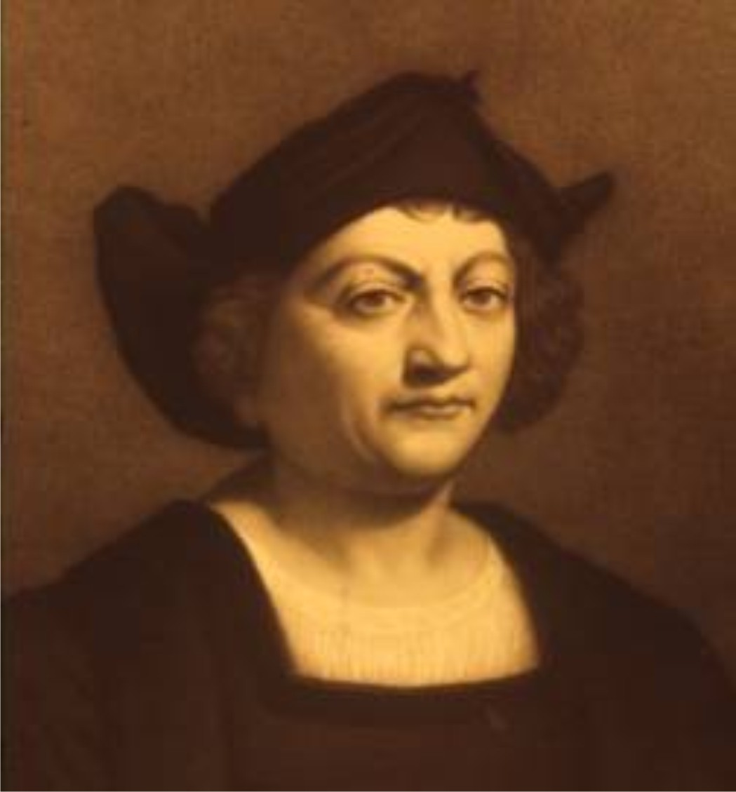

|
Columbus (1451-1506), Italian-born Spanish navigator
who sailed west across the Atlantic Ocean in search of a route to
Asia but achieved fame by making landfall in the Americas instead.
On October 12, 1492, two worlds unknown to each other met for the
first time on a small island in the Caribbean Sea. While on a voyage
for Spain in search of a direct sea route from Europe to Asia,
Christopher Columbus unintentionally encountered the Americas.
However, in four separate voyages to the Caribbean from 1492 to 1504,
he remained convinced that he had found the lands that Marco Polo
reached in his overland travels to China at the end of the 13th century.
To Columbus it was only a matter of time before a passage was found
through the Caribbean islands to the fabled cities of Asia.
Columbus was not the first European to reach the Americas—Vikings
from Scandinavia had briefly settled on the North American coast,
in what is now Newfoundland and Labrador, Canada, in the late 10th or
early 11th century. However, Columbus’s explorations had a profound impact
on the world.
|
Europe In The Time Of Columbus
Christopher Columbus is difficult without understanding the
world into which he was born. The 15th century was a century of change,
and many events that occurred during that time profoundly affected European
society. Many of these events were driven by the centuries-long conflict
between Christians and Muslims, followers of the religion known as Islam.
The event that had the most far-reaching effects on Europe in the 15th
century was the fall of the city of Constantinople (modern İstanbul, Turkey)
to the Muslim Ottoman Empire. Constantinople had been the capital of the
Orthodox Christian Byzantine Empire for centuries, and it was an important
center for trade between Europe and Asia. In 1453 the Ottoman Empire,
which had already conquered much of southeastern Europe, captured the city,
closing an important trade route from Europe to the east (see Ottoman Empire).
European merchants could still buy Asian goods from Muslims in places such
as Alexandria, Egypt. However, Europeans longed for a sea route to Asia that
would allow them to bypass the Muslims and purchase Asian products directly.
In addition, European princes and kings quickly realized that the first
nation to find such a route could become very wealthy by monopolizing the
highly profitable Asian trade.
|